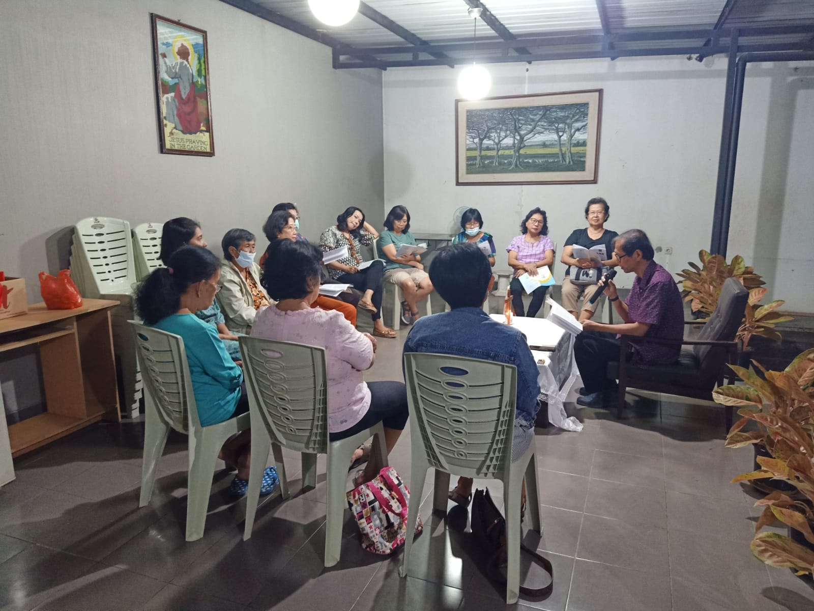
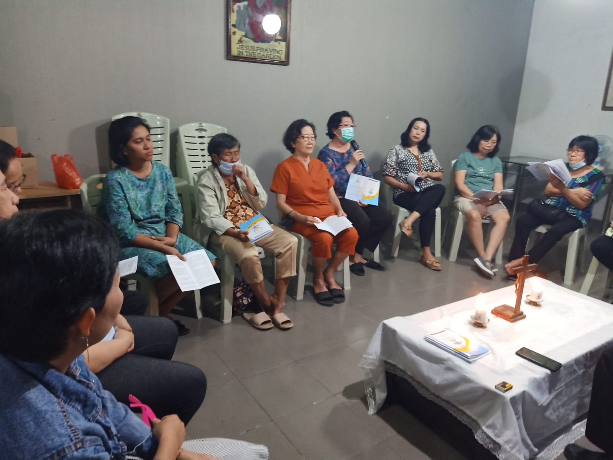
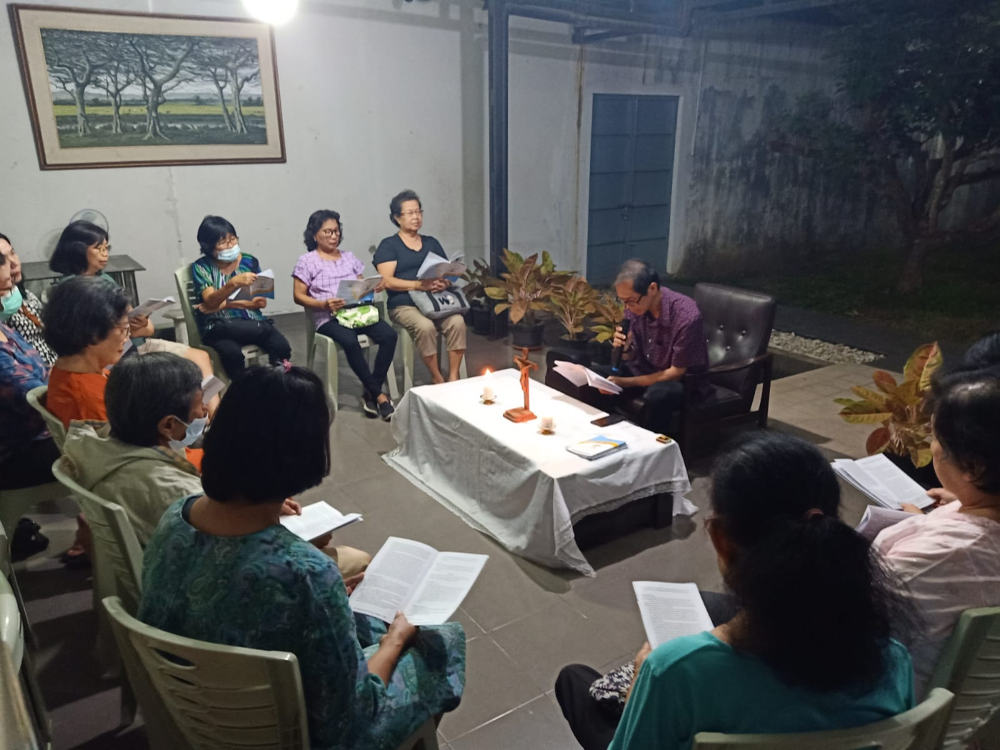
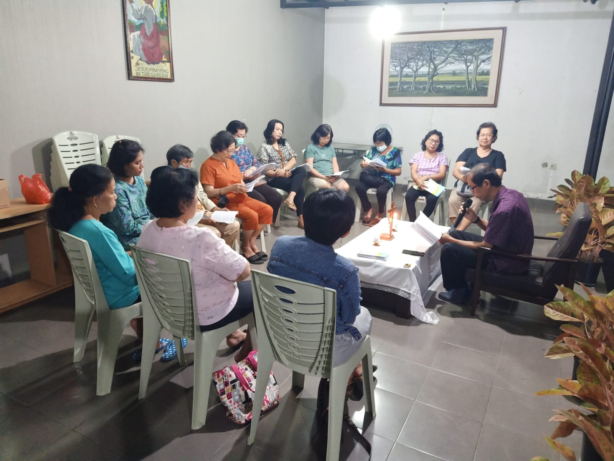
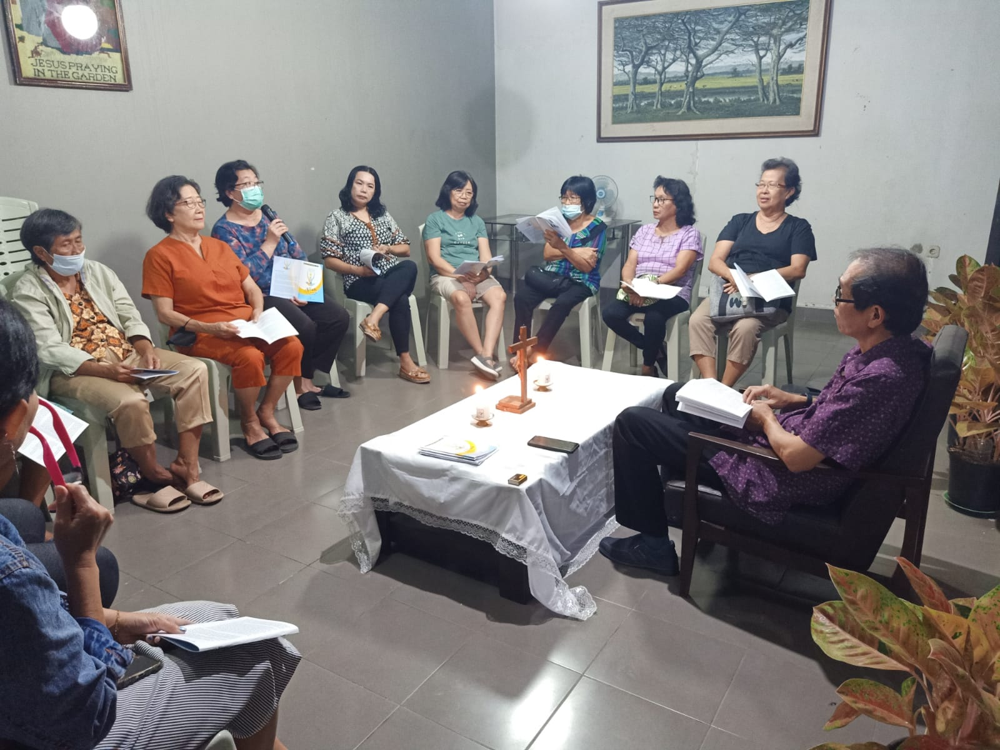

Pertemuan BKSN ke 2: Kasih Allah Menggerakkan Pertobatan
|  |  |  |
|  |  |
Pengalaman selama masa pandemi dan berbagai pengalaman hidup yang menyebabkan kesedihan, ketakutan, kecemasan, bahkan kematian menjadi bukti betapa rapuhnya manusia. Kerapuhan manusia ini melahirkan dunia yang semakin rentan terhadap krisis, pudarnya persaudaraan manusia, fanatisme ideologi, dan kepentingan kelompok yang menyebabkan manusia terpecah belah. Kerapuhan hidup manusia hanya dapat dipulihkan jika manusia berani mengambil pilihan untuk bertobat.
Dalam pertemuan kedua ini, subtema nya adalah “Kasih Allah Menggerakkan Pertobatan.” Pertobatan mengajak kita untuk menyadari kasih Allah yang amat dalam dan luas, yang tidak hanya ditujukan untuk sekelompok orang tertentu, melainkan untuk semua orang terutama yang mengalami kerapuhan hidup, asalkan mereka bertobat. Teks didalami diambil dari perikop Yun. 4:1-11. Berhadapan dengan kekesalan Yunus yang lebih menginginkan hukuman terhadap orang-orang Niniwe, tanpa kenal lelah Allah terus-menerus memberi tanda agar Yunus memahami diri-Nya yang berbelas kasih dan kehendak-Nya untuk memberi pengampunan kepada semua orang yang berdosa. Pada akhirnya, dalam diam dan keheningan, Yunus menyadari pentingnya martabat kehidupan manusia yang seharusnya dikasihi dan diampuni.
Inspirasi Yun. 4:1-11
4:1 Tetapi, hal itu membuat Yunus sangat gusar dan marah.
4:2 Lalu ia berdoalah kepada TUHAN, “Ya TUHAN, bukankah hal ini telah kukatakan, ketika aku masih di negeriku? Itulah sebabnya aku dahulu melarikan diri ke Tarsis, sebab aku tahu bahwa Engkaulah Allah yang pengasih dan penyayang, panjang sabar dan berlimpah kasih setia serta yang menyesal atas malapetaka yang hendak didatangkan-Nya.
4:3 Sekarang, ya TUHAN, ambilah kiranya nyawaku, karena lebih baik aku mati daripada hidup.”
4:4 Tetapi firman TUHAN, “Patutkah engkau marah?”
4:5 Yunus keluar dari kota itu, lalu duduk di sebelah timurnya. Di situ ia mendirikan sebuah pondok dan duduk di bawah naungannya, melihat apa yang akan terjadi atas kota itu.
4:6 Atas penentuan TUHAN Allah tumbuhlah sebatang pohon jarak melampaui kepala Yunus untuk menaunginya, agar ia lepas dari kegusaran hatinya. Yunus sangat bersukacita karena pohon jarak itu.
4:7 Tetapi, keesokan harinya, ketika fajar menyingsing, atas penentuan Allah datanglah seekor ulat, yang menggerogoti pohon jarak itu, sehingga layu.
4:8 Ketika matahari terbit, atas penentuan Allah bertiuplah angin timur yang panas dan sinar matahari menyengat kepala Yunus sehingga ia rebah tak berdaya. Lalu ia minta mati, katanya, “Lebih baik aku mati daripada hidup.”
4:9 Firman Allah kepada Yunus, “Patutkah engkau marah karena pohon jarak itu?” Jawabnya, “Selayaknyalah aku marah sampai mati.”
4:10 Lalu Allah berfirman, “Engkau mengasihani pohon jarak itu, padahal engkau tidak berjerih payah atau menumbuhkannya. Ia tumbuh dalam satu malam dan binasa dalam satu malam pula.
4:11 Bagaimana mungkin Aku tidak mengasihani Niniwe, kota yang besar itu, yang berpenduduk lebih dari seratus dua puluh ribu orang, yang tidak tahu membedakan tangan kanan dari tangan kiri, beserta ternaknya yang banyak?”
Pendalaman Teks
- Yunus sangat gusar dan marah karena melihat apa yang dilakukan Tuhan Allah. Allah membatalkan malapetaka yang hendak didatangkan-Nya kepada orang-orang Niniwe karena pertobatan mereka (3:9-10). Yunus gusar dan marah karena Allah itu pengasih dan penyayang (4:2). Bagi Yunus, Allah seharusnya bersikap adil dengan menghukum penduduk Niniwe karena kejahatan mereka, bukan malah mengampuni mereka.
- Kegusaran dan kemarahan Yunus terungkap jelas dalam permintaannya. Dia meminta lebih baik mati saja daripada hidup. Permintaan ini mengingatkan kita pada keinginannya yang sama ketika melarikan diri dari hadapan Tuhan Allah. Saat di atas kapal, dia memilih lebih baik mati saja daripada tunduk pada kehendak Allah (1:12), sekarang pun dia kembali meminta untuk mati saja daripada hidup (4:2) karena tidak senang dengan sikap Allah yang berbelas kasih kepada penduduk kota Niniwe. Dia tidak senang dengan pengampunan yang diberikan Allah kepada mereka yang bertobat. Dia menolak untuk berdamai dengan cara Tuhan yang mengasihi dan mengampuni orang berdosa yang bertobat. - Menanggapi permintaan Yunus yang bernada marah, Allah bertanya kepadanya: “Layakkah engkau marah?” (4:4). Pertanyaan ini mengungkapkan secara implisit penolakan Allah akan permintaan Yunus. Allah lebih menghendaki agar Yunus bertobat dengan tidak mengikuti kebenaran dan keyakinannya sendiri, tetapi mengikuti kehendak Allah.
- Tuhan Allah tidak jemu-jemu memberi tanda supaya Yunus memahami diri-Nya sebagai pengasih dan penyayang serta panjang sabar yang mengampuni orang berdosa yang bertobat. Tanda kasih sayangNya kepada Yunus diungkapkan-Nya dengan menumbuhkan pohon jarak dalam satu malam. Tindakan Allah ini membuatnya senang dan bersukacita karena dia terlindungi dari panas terik. Dari sini terlihat kepribadian Yunus yang sesungguhnya. Ia bersukacita ketika menerima dari Tuhan sesuatu yang menyukakan dirinya, sebaliknya ketika menerima sesuatu yang berbeda dari keyakinannya, ia menjadi gusar dan marah.
- Yunus marah karena pohon jarak menjadi layu karena digrogoti ulat. Akibatnya, angin yang berhawa panas dan matahari yang terik menyengat kepalanya hingga membuatnya rebah tak berdaya. Dalam situasi inilah dia berontak kepada Allah dan memilih lebih baik mati saja daripada hidup. Menanggapi pemberontakan dan protes ini Allah lagi-lagi menyatakan diri-Nya sebagai pengasih dan penyayang dalam sebuah pertanyaan retoris. “Bagaimana tidak Aku akan sayang kepada Niniwe, kota yang besar itu, yang berpenduduk lebih dari seratus dua puluh ribu orang, yang semuanya tak tahu membedakan tangan kanan dari tangan kiri, dengan ternaknya yang banyak?” (4:11). Melalui pertanyaan ini diungkapkan kasih sayang Allah kepada orang-orang berdosa yang bertobat. Allah mengampuni para pendosa yang bertobat sekaligus juga berbelas kasih kepada mereka yang tidak sadar bahwa mereka berdosa sebab mereka adalah ciptaan-Nya.
Sharing dan Aksi Nyata
Setelah penjelasan teks, peserta diajak untuk mensharingkan pengalaman pribadi mereka dan membangun aksi nyata dengan bantuan beberapa pertanyaan :
Bagaimana sikap saya ketika berhadapan dengan sesama yang berlaku tidak adil dan merugikan orang lain?
Didalam keluarga atau lingkungan masyarakat, apakah saya bersedia berbaikan kembali dengan anggota keluarga atau orang lain yang terus-menerus melakukan kesalahan yang sama?
Bila saya melakukan kesalahan terhadap orang lain, apakah saya dengan rendah hati berani mengakui kesalahan tersebut dan meminta maaf?
Materi tulisan dari buku pendalaman BKSN 2023 yang disusun oleh tim Lembaga Biblika Indonesia.